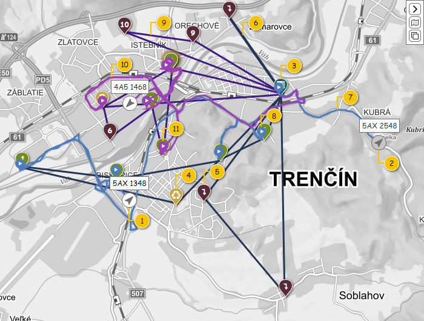
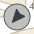
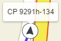
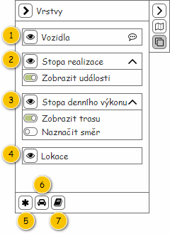

Stručný popis
Mapa realizace denních výkonů slouží k zobrazení Realizací denního výkonu, které odpovídají nastavení provedenému v nástrojové liště. Pokud je datum realizace nastaveno na dnešní datum, je zobrazován aktuální stav realizace odpovídajících Denních výkonů. V případě, kdy je datum realizace nastaveno do minulosti, jsou zobrazena historická data. Datum realizace v budoucnosti pak není možné nastavit.
V mapě je pak zobrazena jak skutečná trasa získaná z vozidlové jednotky, tak trasa plánovaná dispečerem.
Uživatelské rozhraní
Barvy a ikony jsou společné pro celou obrazovku monitoringu realizace Denních výkonů, proto jsou uvedeny společně na jednom místě – viz Použité barvy a ikony. Pokud je v dalším textu odkazováno na barvy či ikony, jedná se o hesla obsažená v tomto přehledu.
Poznámka: Základní zobrazení mapy vychází z jejího obecného popisu.
Rozložení
Nejprve je uveden náhled na mapu spolu s prvky, které se v ní vyskytují. Následně jsou pak popsány jednotlivé vrstvy obsahující tyto prvky.
Drátový diagram

Přehled UI komponent
| Callout | Popis | Vrstva |
|---|---|---|
| 1 | Vozidlo se zapnutým motorem. | Vozidla |
| 2 | Vozidlo s vypnutým motorem. | Vozidla |
| 3 | Lokace představující provozovnu. | Lokace |
| 4 | Lokace představující likvidační místo. | Lokace |
| 5 | Další monitorované lokace. | Lokace |
| 6 | Plánovaná stopa denního výkonu. | Stopa denního výkonu |
| 7 | Skutečná stopa realizace denního výkonu. | Stopa realizace |
| 8 | Událost získaná z vozidla. | Stopa realizace |
| 9 | Plánovaná stopa denního výkonu – označená. | Stopa denního výkonu |
| 10 | Skutečná stopa realizace denního výkonu – označená. | Stopa realizace |
| 11 | Událost získaná z vozidla – označená. | Stopa realizace |
Interakce
V rámci mapy nejsou dostupné žádné speciální interakce. Jediné, co mapa nabízí, je zobrazení ToolTipů k jednotlivým prvkům mapy. Popis chování je pak popsán u konkrétních prvků, pro které je ToolTip dostupný.
Chování
Označení realizace denního výkonu
Označení Realizací denních výkonů v rámci mapy je umožněno hned několika způsoby (tzv. multiselect není k dispozici):
- kliknutí levým tlačítkem myši na konkrétní Vozidlo (vrstva Vozidla),
- kliknutí levým tlačítkem myši na konkrétní stopu představující Denní výkon (vrstva Stopa denního výkonu),
- kliknutí levým tlačítkem myši na konkrétní stopu představující Realizací denního výkonu (vrstva Stopa realizace),
- kliknutí levým tlačítkem myši na konkrétní záznam představující FLW Událost v mapě (vrstva Stopa realizace),
- kliknutí levým tlačítkem myši na konkrétní záznam představující FLW Událost v kontextové nabídce (viz Kontextová nápověda FLW události),
- kliknutí levým tlačítkem myši na konkrétní záznam představující FOB informace o realizaci lokace objednané služby v mapě (vrstva Stopa realizace),
- kliknutí levým tlačítkem myši na konkrétní záznam představující FOB informace o realizaci lokace objednané služby v kontextové nabídce (viz Kontextová nápověda FOB informace o realizaci lokace objednané služby),
- kliknutí levým tlačítkem myši na konkrétní Lokaci objednané služby (vrstva Lokace).
Po označení pak dojde ke zvýraznění odpovídající Realizace denního výkonu jak v mapě (viz popis jednotlivých vrstev), tak dojde k jejímu výběru i v rámci přehledu Realizací denního výkonu (viz ).
Označení lokace objednané služby
Označení Lokace objednané služby v rámci mapy je umožněno kliknutím levým tlačítkem myši na ni (tzv. multiselect není k dispozici). Současně je provedeno označení odpovídající Realizace denního výkonu (viz Označení realizace denního výkonu).
Po označení pak dojde ke zvýraznění ikony odpovídající Lokace objednané služby jak v mapě, tato ikona bude v popředí (viz popis jednotlivých vrstev), tak dojde k jejímu výběru i v rámci přehledu Realizací denního výkonu (viz ) a Průběhu realizace.
K označení lokace v mapě dojde i v případě výběru v panelu Průběh realizace a Detail událostí (v případě, že je vybraná událost svázaná s lokací)
Označení události
Označení FLWW události a FOB události v mapě je umožněno kliknutím levým tlačítkem myši na ni (multiselect není k dipozici). Současně je provedeno odpovídající označení Realizace denního výkonu (viz Označení realizace denního výkonu) a Lokace objednané služby (je-li událost s lokací svázaná) a Průběhu realizace.
Po označení pak dojde ke zvýraznění ikony odpovídající události jak v mapě, tato ikona bude v popředí, tak dojde k jejímu výběru v rámci Detailu událostí
K označení události v mapě dojde i případě výběru události v panelu Detail událostí
Vykreslené vrstvy
Vozidla
Jedná se o vrstvu zobrazující aktuální polohu Vozidel. Vrstva je pak zobrazena pouze v případě, kdy je sledována aktuální situace – v nástrojové liště obrazovky je nastaveno dnešní datum. Pouze v takovém případě má zobrazení aktuální polohy Vozidel smysl.
Vozidla, která mají být v rámci vrstvy vykreslena, jsou získána z dostupných Realizací denního výkonu v rámci obrazovky – jedná se o Realizace denního výkonu načtené v rámci TODO: Doplnit UC.
Samotné Vozidlo je pak získáno následovně: atribut Vozidlo entity Denní výkon – atribut Denní výkon entity Realizace denního výkonu.
Popis a grafická podoba jednotlivých Vozidel zobrazených v rámci této vrstvy jsou uvedeny v tabulce.
Poznámka: Pokud není hodnota pro bublinkovou nápovědu k dispozici, není bublinková nápověda zobrazena vůbec.
| Prvek | Hodnota | Formát | Označený | Neoznačený | Text pro ToolTip | Nástrojová lišta | Poznámka |
|---|---|---|---|---|---|---|---|
| Vozidlo se zapnutým motorem | Pozice, směr a případně aktuální rychlost je získána z API pro konkrétní Vozidlo – Pozice pro objekt a čas:
Výstupem pak jsou:
| Samotné zobrazení se pak liší podle toho, zda je odpovídající Realizace denního výkonu označena – viz Označení realizace denního výkonu. | Data pro ToolTip jsou získána ze dvou zdrojů:
Formát je pak následující:
| Odpovídá položce Vozidlo nástrojové lišty (zobrazení/skrytí celé vrstvy). | Informace, že je motor zapnutý, je získána z API pro konkrétní Vozidlo (viz Pozice pro objekt a čas) – je splněna alespoň jedna z dále uvedených podmínek:
| ||
| Vozidlo s vypnutým motorem |  | Data pro ToolTip jsou získána z odpovídajícího Denního výkonu (atribut Denní výkon entity Realizace denního výkonu).
| Informace, že je motor vypnutý, je získána z API pro konkrétní Vozidlo (viz Pozice pro objekt a čas) – je splněna alespoň jedna z dále uvedených podmínek:
| ||||
| Popisek | Entita Denní výkon – atribut Denní výkon entity Realizace denního výkonu. | Pokud není hodnota k dispozici (v tuto chvíli musí být k Dennímu výkonu přiřazeno Vozidlo), je místo hodnoty zobrazen zástupný text: licensePlatePlaceholderText, viz Konfigurační hodnoty. |  | – | Odpovídá položce Vozidlo nástrojové lišty – Další možná nastavení: Tlačítko pro zobrazení/skrytí popisku Vozidla (zobrazení/skrytí popisků). Pokud není zobrazena celá vrstva, nejsou zobrazeny ani popisky. | – | |
Poznámka: Grafická podoba Vozidla i jeho popisku odpovídá zobrazení Objektů v rámci FLWW2 – viz uvedené náhledy. Není však možné nastavovat barevné rozlišení Skupin objektů a podobně.
Stopa realizace
Jedná se o vrstvu zobrazující realizaci denního výkonu. Zobrazená stopa tedy odpovídá skutečné trajektorii daného Vozidlo. Potřebné informace jsou pak získány z konkrétních Realizací denního výkonu (pro v mapě načtené Denní výkony). Samotné vykreslení probíhá následovně…
- Pro všechny v mapě zobrazené Denní výkony:
- Systém nalezne odpovídající Realizaci denního výkonu – hledá takový záznam, který splňuje všechny dále uvedené podmínky zároveň:
- Hodnota atributu Denní výkon odpovídá právě zkoumanému Dennímu výkonu.
- Hodnota atributu Je aktivní je nastavena na TRUE (implementováno, ale nevyužíváno).
- Pokud je nalezena odpovídající Realizace denního výkonu (viz krok 1.a):
- Systém vykreslí stopu této Realizace denního výkonu v mapě: prvek Stopa (viz tabulka dále).
- Pokud není trajektorie k dispozici, nedochází ani k vykreslení v mapě.
- Pokud není trajektorie k dispozici, nedochází ani k vykreslení v mapě.
- Systém vyhodnotí odpovídající Způsob vyhodnocení realizace – atribut Způsob vyhodnocení realizace právě zkoumaného Denního výkonu (viz krok 1).
- PTO: Informace jsou obsaženy v rámci entity FLW Událost (vychází z entity Událost manipulace s nádobou):
- Systém nalezne odpovídající Obsluhy lokací objednaných služeb – hledá takové záznamy, které splňují všechny dále uvedené podmínky zároveň:
- Hodnota atributu Realizace denního výkonu odpovídá této Realizaci denního výkonu.
- Hodnota atributu Realizace denního výkonu odpovídá této Realizaci denního výkonu.
- Pro všechny získané Obsluhy lokací objednaných služeb (viz předchozí krok):
- Systém nalezne odpovídající FLW Událost – hledá takový záznam, který splňuje všechny dále uvedené podmínky zároveň:
- Hodnota atributu Identifikátor odpovídá hodnotě atributu Identifikátor záznamu o realizaci právě zkoumané Obsluhy lokace objednané služby.
- Systém vykreslí polohu této FLW Události v mapě: prvek FLW událost (viz tabulka dále).
- Pokud nejsou souřadnice k dispozici, nedochází ani k vykreslení v mapě.
- Pokud nejsou souřadnice k dispozici, nedochází ani k vykreslení v mapě.
- Poznámka: Potřebné informace jsou v rámci implementace získány odlišným způsobem (přes Lokaci objednané služby a Realizace denního výkonu).
- Systém nalezne odpovídající FLW Událost – hledá takový záznam, který splňuje všechny dále uvedené podmínky zároveň:
- Systém nalezne odpovídající Obsluhy lokací objednaných služeb – hledá takové záznamy, které splňují všechny dále uvedené podmínky zároveň:
- FOB: Informace jsou obsaženy v rámci entity FOB informace o realizaci lokace objednané služby:
- Systém nalezne odpovídající FOB informace o realizaci lokací objednaných služeb – hledá takové záznamy, které splňují všechny dále uvedené podmínky zároveň:
- Hodnota atributu Externí identifikátor objektu odpovídá Objektu (atribut Externí identifikátor FLW), který figuruje v rámci právě zkoumaného Denního výkonu (atribut Vozidlo).
- Pokud není vozidlo na úrovni právě zkoumaného Denního výkonu k dispozici, nehledáme ani odpovídající FOB informace o realizaci lokací objednaných služeb.
- Hodnota atributu Datum a čas odbavení odpovídá datu realizace právě zkoumaného Denního výkonu (atribut Datum realizace).
- Hodnota atributu Externí identifikátor objektu odpovídá Objektu (atribut Externí identifikátor FLW), který figuruje v rámci právě zkoumaného Denního výkonu (atribut Vozidlo).
- Systém ze získané kolekce FOB informací o realizaci lokací objednaných služeb (viz přechozí krok) odebere z pohledu uživatele nadbytečné záznamy…
- Systém odebere záznamy, které v rámci atributu Identifikátor lokace objednané služby neobsahují hodnotu (nastaveno na NULL).
- Systém odebere záznamy, které v rámci atributu Identifikátor lokace objednané služby odkazují na Lokaci objednané služby, která již není naplánována na právě zkoumaný Denní výkon…
- Získáme odpovídající Objednanou službu – hodnota atributu Objednané služba získané Lokace objednané služby.
- Získáme odpovídající Položku denního výkonu – hodnota atributu Objednaná služba odkazuje na získanou Objednanou službu.
- Pokud je získána Položka denního výkonu, vyhodnotíme zachování odpovídající FOB informace o realizaci lokace objednaných služeb:
- Pokud hodnota atributu Denní výkon získané Položky denního výkonu odkazuje na právě zkoumaný Denní výkon: odpovídající FOB zpráva je v kolekci zachována.
- Jinak je v rámci atributu Denní výkon získané Položky denního výkonu odkazován jiný Denní výkon: odpovídající FOB zpráva je z kolekce odebrána.
- Jinak Položka denního výkonu získána není – odpovídající FOB informace o realizaci lokace objednaných služeb je z kolekce odebrána (lokace již není naplánována na DV).
- Systém odebere záznamy, které jsou duplicitní – z odpovídajících FOB informací o realizaci lokace objednané služby zůstává pro danou Lokaci objednané služby pouze ten nejnovější.
- Získáme skupiny FOB informací o realizaci lokací objednaných služeb dle atributu Identifikátor lokace objednané služby (agregace).
- Z každé skupiny je zachován takový záznam, který má v rámci atributu Datum a čas odbavení maximální hodnotu (ten nejnovější).
- Poznámka: Pokud existuje více takových záznamů se stejnou hodnotu atributu Datum a čas odbavení, pracujeme s tím nejnovějším (dle atributu Datum vytvoření).
- Poznámka: Záznamy jsou odebírány pouze z pomocné kolekce, na úrovni DB zůstávají bez dalších změn.
- Pro všechny získané FOB informace o realizaci lokací objednaných služeb (viz přechozí krok):
- Systém vykreslí polohu právě zkoumané FOB informace o realizaci lokace objednané služby v mapě: prvek FOB informace o realizaci lokace objednané služby (viz tabulka dále).
- Pokud nejsou souřadnice k dispozici, nedochází ani k vykreslení v mapě.
- Pokud nejsou souřadnice k dispozici, nedochází ani k vykreslení v mapě.
- Pokud mají být dodatečně zobrazeny aktivace PTO – vrstva Dodatečné zobrazení aktivací PTO v rámci Nástrojové lišty je nastavená jako zobrazená (hodnota TRUE).
- Systém nalezne odpovídající Obsluhy lokací objednaných služeb – hledá takové záznamy, které splňují všechny dále uvedené podmínky zároveň:
- Hodnota atributu Realizace denního výkonu odpovídá této Realizaci denního výkonu.
- Pro všechny získané Obsluhy lokací objednaných služeb (viz předchozí krok):
- Systém nalezne odpovídající FLW Událost – hledá takový záznam, který splňuje všechny dále uvedené podmínky zároveň:
- Hodnota atributu Identifikátor odpovídá hodnotě atributu Identifikátor záznamu o realizaci právě zkoumané Obsluhy lokace objednané služby.
- Systém vykreslí polohu této FLW Události v mapě: prvek FLW událost (viz tabulka dále).
- Pokud nejsou souřadnice k dispozici, nedochází ani k vykreslení v mapě.
- Poznámka: Potřebné informace jsou v rámci implementace získány odlišným způsobem (přes Lokaci objednané služby a Realizace denního výkonu).
- Systém nalezne odpovídající FLW Událost – hledá takový záznam, který splňuje všechny dále uvedené podmínky zároveň:
- Systém nalezne odpovídající Obsluhy lokací objednaných služeb – hledá takové záznamy, které splňují všechny dále uvedené podmínky zároveň:
- Systém nalezne odpovídající FOB informace o realizaci lokací objednaných služeb – hledá takové záznamy, které splňují všechny dále uvedené podmínky zároveň:
- Jinak: není provedena žádná akce.
- Jedná se o chybový stav (NotImplementedException).
- PTO: Informace jsou obsaženy v rámci entity FLW Událost (vychází z entity Událost manipulace s nádobou):
- Systém vykreslí stopu této Realizace denního výkonu v mapě: prvek Stopa (viz tabulka dále).
- Systém nalezne odpovídající Realizaci denního výkonu – hledá takový záznam, který splňuje všechny dále uvedené podmínky zároveň:
Co se týče zobrazení FOB zpráv, uživatel nově neuvidí záznamy entity FOB informace o realizaci lokace objednané služby tohoto typu:
- zprávy bez vazby na konkrétní lokaci (zůstaly v evidenci např. po zrušení MDU),
- zprávy pro lokaci přeplánovanou na jiný (nebo žádný) denní výkon,
- duplicitní zprávy dané lokace (vznikly např. neopatrnou manipulací řidiče).
Popis a grafická podoba jednotlivých prvků zobrazených v rámci této vrstvy jsou uvedeny v tabulce.
| Prvek | Hodnota | Formát | Označený | Neoznačený | Bublinková nápověda | Nástrojová lišta | Poznámka |
|---|---|---|---|---|---|---|---|
| Stopa | Hodnota atributu Trajektorie odpovídající Realizace denního výkonu. | Barva se liší podle toho, zda je odpovídající Realizace denního výkonu označena – viz Označení realizace denního výkonu:
|  | – | Odpovídá položce Stopa realizace nástrojové lišty (zobrazení/skrytí celé vrstvy). | – | |
| FLW Událost | Hodnoty atributů Zeměpisná šířka, Zeměpisná délka odpovídající FLW Události. | Barva se liší podle toho, zda je odpovídající Realizace denního výkonu označena – viz Označení realizace denního výkonu:
V rámci prvku je pak zobrazena ikona ra-play (viz Ostatní/FLW Událost). | Odpovídá položce Stopa realizace nástrojové lišty – Další možná nastavení: Zobrazení událostí (zobrazení/skrytí událostí). Pokud není zobrazena celá vrstva, nejsou zobrazeny ani události. | – | |||
| FOB informace o realizaci lokace objednané služby | Hodnoty atributů Zeměpisná šířka, Zeměpisná délka odpovídající FOB informace o realizaci lokace objednané služby. | Barva se liší podle toho, zda je odpovídající Realizace denního výkonu označena – viz Označení realizace denního výkonu:
V rámci prvku je zobrazena ikona, ta se liší dle hodnoty atributu Způsob odbavení (viz Způsob odbavení lokace objednané služby):
|
|
| Viz Kontextová nápověda FOB informace o realizaci lokace objednané služby. | Odpovídá položce Stopa realizace nástrojové lišty – Další možná nastavení: Zobrazení událostí (zobrazení/skrytí událostí). Pokud není zobrazena celá vrstva, nejsou zobrazeny ani události. | – |


Kontextová nápověda FLW události
Formát bublinkové nápovědy s informacemi o FLW Události. Dílčí položky jsou pak uvedeny ve stejném pořadí jako v tabulce.
| Položka | Hodnota | Formát | Viditelná |
|---|---|---|---|
| Vozidlo | Entita Denní výkon (záznam, pro který je odpovídající FLW Událost vykreslena, viz krok 1 toku událostí). | Vozidlo: Pokud není hodnota k dispozici (v tuto chvíli musí být k Dennímu výkonu přiřazeno Vozidlo), je místo hodnoty zobrazen zástupný text: licensePlatePlaceholderText, viz Konfigurační hodnoty. | Vždy. |
| Čas | Entita FLW Událost. | Čas: Hodnota je zobrazena v uvedeném formátu: Čas. | Vždy. |
| Adresa | Entita FLW Událost. | Adresa: Hodnota je zobrazena v uvedeném formátu: Zkrácená adresa. | Pokud je hodnota k dispozici. |
| Souřadnice | Entita FLW Událost. | Souřadnice: Hodnota je zobrazena v uvedeném formátu: Souřadnice. | Vždy. |
| Způsob odbavení | Entita FLW Událost. | Způsob odbavení: Pozn. pro realizaci - v případě, že způsob odbavení pro FLW událost nebude k dispozici, lze pořadové číslo přesunout za identifikaci vozidla | Vždy |
Kontextová nápověda FOB informace o realizaci lokace objednané služby
Formát bublinkové nápovědy s informacemi o FOB informace o realizaci lokace objednané služby. Dílčí položky jsou pak uvedeny ve stejném pořadí jako v tabulce.
| Položka | Hodnota | Formát | Viditelná |
|---|---|---|---|
| Zákazník | Entita Zákazník.
Hledaný Zákazník je k dispozici v rámci Objednávky, pro kterou vznikla Lokace objednané služby odkazovaná z dané FOB informace o realizaci lokace objednané služby (viz dále uvedený předpis). Atribut Objednávka entity Položka objednávky – atribut Položka objednávky entity Objednaná nádoba – atribut Objednaná nádoba entity Objednaný úkon – atribut Objednaný úkon entity Objednaná služba – atribut Objednaná služba entity Lokace objednané služby – atribut Identifikátor lokace objednané služby odpovídající FOB informace o realizaci lokace objednané služby. | Zákazník: | Pokud je hodnota k dispozici. |
| Vozidlo | Entita Denní výkon (záznam, pro který je odpovídající FOB informace o realizaci lokace objednané služby vykreslena, viz krok 1 toku událostí). | Vozidlo: Pokud není hodnota k dispozici (v tuto chvíli musí být k Dennímu výkonu přiřazeno Vozidlo), je místo hodnoty zobrazen zástupný text: licensePlatePlaceholderText, viz Konfigurační hodnoty. | Vždy. |
| Čas | Entita FOB informace o realizaci lokace objednané služby. | Čas: Hodnota je zobrazena v uvedeném formátu: Čas. | Vždy. |
| Adresa | Entita FOB informace o realizaci lokace objednané služby. | Adresa: Hodnota je zobrazena v uvedeném formátu: Zkrácená adresa. | Pokud je hodnota k dispozici. |
| Souřadnice | Entita FOB informace o realizaci lokace objednané služby. | Souřadnice: Hodnota je zobrazena v uvedeném formátu: Souřadnice. | Vždy. |
| Způsob odbavení | Entita FOB informace o realizaci lokace objednané služby. | Způsob odbavení: Viz Způsob odbavení lokace objednané služby. Pořadové číslo zobrazovat v případě, že máme propojení s lokací objednané služby, zobrazí se pořadové číslo dané lokace objednané služby. | Vždy. |
Indikace překrývajících se informací o realizaci
V praxi může snadno nastat situace, kdy se na malé ploše vyskytuje více záznamů s informacemi o realizaci, které se překrývají. Uživatel tedy vidí pouze omezené množství informací, což není žádoucí. Uvedený problém pak řešíme zvýrazněním takových záznamů, které se vyskytují v blízkém okolí jiných záznamů tohoto typu. Po kliknutí na takto zvýrazněný shluk se zobrazí kontextová nabídka, ve které jsou dostupné odpovídající záznamy tohoto typu v blízkém okolí. Pracujeme pak se záznamy tohoto typu:
- FLW Událost (aktivace sledovaného vstupu získané z FLWW2),
- FOB informace o realizaci lokace objednané služby (zprávy získané přímo z FOB).
Získání mezní vzdálenosti
Abychom mohli vyhodnotit problematické shluky záznamů s informacemi o realizaci, musíme definovat mezní vzdálenost. Podle ní bud shluky vytvářeny. Ta je získána jako součin dále uvedených hodnot:
- Měřítko nastavené v rámci mapy, které je vyjádřeno v jednotkách délky (poskytuje knihovna pro zobrazení mapy).
- Koeficient pro určení mezní vzdálenosti vzhledem k nastavenému měřítku mapy: clusterSizeCoefficient (viz Konfigurační hodnoty).
Zvýraznění shluku s informacemi o realizaci
Při vykreslení mapy dochází k nalezení shluků a zvýraznění odpovídajících záznamů s informací o realizaci. To probíhá následovně:
- Systém získá mezní vzdálenost (viz Získání mezní vzdálenosti).
- Systém nastaví všechny záznamy typu FLW Událost a FOB informace o realizaci lokace objednané služby, které jsou zobrazeny v mapě, jako neoznačené.
- Pro všechny odpovídající záznamy (viz krok 2), které jsou zobrazeny v mapě:
- Pokud je právě zkoumaný záznam označen:
- Skok na krok 3.
- Systém nalezne všechny odpovídající záznamy, které se vyskytují v okolí právě zkoumaného záznamu (vzdálenost mezi nimi je menší nebo rovna mezní vzdálenosti).
- Pokud je nalezen alespoň jeden záznam:
- Systém nastaví právě zkoumaný záznam jako označený.
- Systém nastaví všechny v blízkém okolí nalezené záznamy jako označené (v rámci cyklu je tedy můžeme přeskočit, již jsou označené).
- Pokud je právě zkoumaný záznam označen:
- Systém graficky zvýrazní všechny označené záznamy – je provedeno jejich podbarvení (vykreslení kruhové oblasti):
- Barva: Je použita barva #F39753.
- Průhlednost: Nastavena 50% průhlednost.
Poznámka: Pro získání záznamů v okolí bodu je použito existující řešení, viz https://github.com/mapbox/leaflet-knn. Chování pak vychází z .

Kontextová nabídka shluku s informacemi o realizaci
Pro získané shluky je pak k dispozici kontextová nabídka obsahující všechny obsažené záznamy typu FLW Událost a FOB informace o realizaci lokace objednané služby. Tu je možné zobrazit kliknutím levým tlačítkem myši na daný shluk. Její zavření je pak možné provést následovně:
- Stisknutím tlačítka „křížku“ kontextové nabídky.
- Kliknutím do mapy mimo kontextovou nabídku.

Získání odpovídajících záznamů, které jsou v kontextové nabídce obsaženy, probíhá obdobně jako jejich zařazování do shluků. Hledáme tedy takové záznamy typu FLW Událost a FOB informace o realizaci lokace objednané služby, které splňují všechny dále uvedené podmínky zároveň:
- Záznam je právě zobrazena v mapě.
- Záznam je v blízkém okolí takového záznamu, pro který je zobrazována kontextová nabídka (vyhodnoceno dle clusterSizeCoefficient, viz Konfigurační hodnoty).
Posledním krokem je samotné zobrazení kontextové nabídky. Její rozložení si nyní ho popíšeme…
- Jednotlivé záznamy jsou zobrazeny ve formě matice, ta je plněna „po řádcích“.
- Velikost kontextové nabídky se přizpůsobuje svému obsahu (viz náhled dále).
- Maximální počet sloupců matice je nastaven na 5 (následně dochází k zalomení).
- Maximální počet řádků není omezen (při zobrazení více jak 3 řádků je zobrazen posuvník).
- Maximální rozměr kontextové nabídky tedy odpovídá matici o 5 sloupcích a 3 řádcích.
Pořadí záznamů je dáno hodnotou dále uvedeného atributu (řazeno vzestupně):
- FLW Událost: atribut Datum a čas,
- FOB informace o realizaci lokace objednané služby: atribut Datum a čas odbavení.

Poznámka: V rámci kontextové nabídky jsou pro dílčí záznamy dostupné dále uvedené interakce…
- Po kliknuti na záznam dochází k označení odpovídající Realizace denního výkonu.
- Po najetí kurzorem myši nad záznam dochází k zobrazení kontextové nabídky…
Stopa denního výkonu
Jedná se o vrstvu zobrazující naplánovanou stopu Denního výkonu, tedy takovou stopu, kterou uživatel naplánoval.
Plánované stopy jsou získány z dostupných Realizací denního výkonu v rámci obrazovky – jedná se o Realizace denního výkonu načtené v rámci TODO: Doplnit UC.
Samotné stopy jsou pak rekonstruovány z dílčích tras dostupných u Lokací objednané služby, které jsou naplánovány na odpovídající Denní výkon. Postup, jakým jsou získány, je pak následující:
- Systém si připraví prázdnou pomocnou kolekci Lokací objednané služby.
- Systém získá Lokace objednané služby představující Start a vloží ji do pomocné kolekce: atribut Lokace objednané služby entity Položka denního výkonu – atribut Počáteční položka denního výkonu entity Denní výkon – atribut Denní výkon entity Realizace denního výkonu.
- Pro všechny Položky denního výkonu obsažené v odpovídajícím Denním výkonu dle jejich typu (atribut Typ položky): atribut Položky denního výkonu entity Denní výkon – atribut Denní výkon entity Realizace denního výkonu.
- Objednaná služba:
- Pokud tato Položka denního výkonu obsahuje i samostatnou Lokaci objednané služby: hodnota atributu Lokace objednané služby je různá od NULL (poznámka: jedná se o Objednanou službu, která je reprezentována dobou trvání).
- Systém vloží obsaženou Lokaci objednané služby do pomocné kolekce: atribut Lokace objednané služby entity Položka denního výkonu.
- Systém vloží obsaženou Lokaci objednané služby do pomocné kolekce: atribut Lokace objednané služby entity Položka denního výkonu.
- Jinak – pro všechny obsažené Lokace objednané služby: atribut Lokace objednané služby entity Objednaná služba – atribut Objednaná služba entity Položka denního výkonu.
- Pokud zkoumaná Lokace objednané služby splňuje všechny uvedené podmínky, je Systémem vložena do pomocné kolekce:
- atribut Provést nabývá hodnoty TRUE.
- Pokud tato Položka denního výkonu obsahuje i samostatnou Lokaci objednané služby: hodnota atributu Lokace objednané služby je různá od NULL (poznámka: jedná se o Objednanou službu, která je reprezentována dobou trvání).
- Lokace objednané služby – Systém vloží obsaženou Lokaci objednané služby do pomocné kolekce: atribut Lokace objednané služby entity Položka denního výkonu.
- Časový interval – Systém vloží obsaženou Lokaci objednané služby do pomocné kolekce: atribut Lokace objednané služby entity Položka denního výkonu.
- Rozdělení – Systém vloží obsaženou Lokaci objednané služby do pomocné kolekce: atribut Lokace objednané služby entity Položka denního výkonu.
- Objednaná služba:
- Systém získá Lokace objednané služby představující Cíl a vloží ji do pomocné kolekce: atribut Lokace objednané služby entity Položka denního výkonu – atribut Koncová položka denního výkonu entity Denní výkon – atribut Denní výkon entity Realizace denního výkonu.
Ze získaných Lokací objednané služby je pak zrekonstruována celá stopa – způsob vykreslení se pak odvíjí od nastavení této vrstvy v nástrojové liště mapy (viz tabulka). Pokud nejsou nalezeny alespoň 3 Lokace objednané služby, není stopa vykreslena vůbec – v takovém případě odpovídající Denní výkon obsahuje pouze Start a Cíl.
| Způsob vykreslení | Postup vykreslení | Poznámka |
|---|---|---|
| Přímé spojnice |
| Popsané chování odpovídá odebírání prvků z datové struktury Fronta. Je tedy zachováno stejné pořadí, v jakém byly tyto Lokace objednané služby získány. |
| Skutečná trasa | Pro všechny získané Lokace objednané služby:
| Při vykreslení je nutné zachovat stejné pořadí, v jakém byly tyto Lokace objednané služby získány. |
Popis a grafická podoba jednotlivých prvků zobrazených v rámci této vrstvy jsou uvedeny v tabulce.
| Prvek | Hodnota | Formát | Označený | Neoznačený | Text pro ToolTip | Nástrojová lišta | Poznámka |
|---|---|---|---|---|---|---|---|
| Stopa | Stopa – atribut Trasa do další lokace entity Lokace objednané služby. Stopa pak může být vykreslena i jako přímá spojnice mezi jednotlivými Lokacemi objednané služby. V takovém případě není použita hodnota atributu Trasa do další lokace. | Barva se liší podle toho, zda je odpovídající Realizace denního výkonu označena – viz Označení realizace denního výkonu:
V rámci vykreslené stopy může být dále naznačen její směr. | – | Odpovídá položce Stopa denního výkonu nástrojové lišty (zobrazení/skrytí celé vrstvy). Zobrazení trasy: Odpovídá položce Stopa denního výkonu nástrojové lišty – Další možná nastavení: Zobrazení trasy (zobrazení přímých spojnic nebo skutečných tras). Naznačení směru: Odpovídá položce Stopa denního výkonu nástrojové lišty – Další možná nastavení: Naznačení směru (zobrazení/skrytí naznačení směru). | – |
Lokace
Jedná se o vrstvu zobrazující jednotlivé Lokace objednané služby, které jsou podstatné z pohledu monitoringu realizace.
Lokace objednané služby, které mají být vykresleny, jsou získány z dostupných Realizací denního výkonu v rámci obrazovky – jedná se o Realizace denního výkonu načtené v rámci TODO: Doplnit UC.
Samotné Lokace objednané služby jsou dostupné z Položek denního výkonu, které jsou získány následovně: atribut Položky denního výkonu entity Denní výkon – atribut Denní výkon entity Realizace denního výkonu. Načítání Lokací objednané služby se pak liší dle typu Položky denního výkonu (atribut Typ položky):
- Objednaná služba: Lokace objednané služby entity Objednaná služba – atribut Objednaná služba entity Položka denního výkonu (poznámka: může nastat případ, kdy bude kolekce Lokací objednané služby prázdná).
- Lokace objednané služby: atribut Lokace objednané služby entity Položka denního výkonu.
- Časový interval: nejsou zaneseny,
- Rozdělení: nejsou zaneseny.
Ze získaných Lokací objednané služby jsou pak vykresleny ty, které jsou zajímavé z pohledu monitoringu realizace a splňují další podmínky:
- atribut Provést nabývá hodnoty TRUE,
- atribut Monitoring realizace nabývá hodnoty TRUE.
Pokud v rámci nalezených Lokací objednané služby není obsažena Provozovna nastavená v nástrojové liště obrazovky, je vykreslena také.
Popis a grafická podoba jednotlivých Lokací objednané služby zobrazených v rámci této vrstvy jsou uvedeny v tabulce. Vykreslení Lokací objednané služby je pak odlišeno dle jejich typu (atribut Typ lokace).
| Typ lokace | Hodnota | Formát | Označený | Neoznačený | Text pro ToolTip | Nástrojová lišta | Poznámka |
|---|---|---|---|---|---|---|---|
| Místo realizace, Místo dočasného uložení | Souřadnice pro umístění v mapě – atribut Souřadnice entity Lokace objednané služby. | Samotné zobrazení se pak liší podle toho, zda je odpovídající Realizace denního výkonu označena – viz Označení realizace denního výkonu:
Dále je možné označit konkrétní Lokaci objednané služby, dochází pak k jejímu grafickému zvýraznění:
Jednotlivé Lokace objednané služby jsou graficky rozlišeny dle toho, zda již došlo k jejich obsluze. Vyhodnocení probíhá následovně:
|
| Data pro ToolTip jsou získána z odpovídající Lokace objednané služby – viz Formát výstupu pro ToolTip lokace. | Odpovídá položce Lokace nástrojové lišty (zobrazení/skrytí celé vrstvy). | – | |
| Likvidační místo, Výchozí likvidační místo | Souřadnice pro umístění v mapě – atribut Souřadnice entity Lokace objednané služby. | Ikona a barva: Typ lokace/Likvidační místo. Konkrétní Lokaci objednané služby je možné označit, dochází pak k jejímu grafickému zvýraznění:
|  | Na zobrazení Lokace objednané služby nemá vliv to, zda je označena odpovídající Realizace denního výkonu. K jejímu zvýraznění dochází pouze po označení přímo této lokace. | |||
| Provozovna | Souřadnice pro umístění v mapě – atribut Souřadnice entity Lokace objednané služby.
| Ikona a barva: Typ lokace/Provozovna. Konkrétní Lokaci objednané služby je možné označit, dochází pak k jejímu grafickému zvýraznění:
|  | Na zobrazení Lokace objednané služby nemá vliv to, zda je označena odpovídající Realizace denního výkonu. K jejímu zvýraznění dochází pouze po označení přímo této lokace. |


Zobrazení shluku lokací
- rozšíření pravidel pro shlukování a zobrazení shluků dle popisu: Kontextová nabídka shluku na lokace objednaných služeb
- zobarzení shluku a kontextové nabídky dle obecných pravidel s tím, že je třeba zachovat barevné rozlišení obsloužených a neobslouženýc míst a zobrazení pořadí lokací
- při najetí myší na událost v rámci kontextové nabídky, zobrazit její popisek (viz Formát výstupu pro ToolTip lokace
- lokace mají samostatný shluk

Pořadí lokace objednané služby
Zobrazené pořadí odpovídá skutečnému pořadí v rámci Denního výkonu (atribut Denní výkon entity Realizací denního výkonu) s tím rozdílem, že jsou brány v potaz pouze takové Lokace objednané služby, které jsou zobrazeny v mapě. V rámci postupného vykreslování Lokací objednané služby je tedy postupně přidělováno pořadové číslo. První vykreslená Lokace objednané služby má pak pořadové číslo 1.
Jak již bylo uvedeno dříve, jsou vykreslovány pouze takové Lokace objednané služby, u kterých je hodnota atributu Monitoring realizace nastavena na TRUE.
I přesto, že jsou Lokace objednané služby typu Likvidační místo, Výchozí likvidační místo a Provozovna vykresleny pouze jednou (i když se v rámci Denního výkonu vyskytují opakovaně), jsou započítávány v rámci vyhodnocení pořadových čísel.
Formát výstupu pro ToolTip lokace
Formát výstupu s informacemi o Lokaci objednané služby pro ToolTip je společný pro všechny Lokace objednané služby. Pro některé typy však nejsou zobrazeny všechny položky – viz tabulka. Položky jsou pak uvedeny ve stejném pořadí jako v tabulce.
| Položka | Hodnota | Formát | Viditelná |
|---|---|---|---|
| Vozidlo | Entita Denní výkon – atribut Denní výkon entity Realizace denního výkonu. | Vozidlo: Pokud není hodnota k dispozici a zároveň je k Dennímu výkonu přiřazeno Vozidlo (atribut Vozidlo), je zobrazen zástupný text: licensePlatePlaceholderText, viz Konfigurační hodnoty. | Pokud se jedná o Lokaci objednané služby jednoho z uvedených typů:
|
| Akce | Entita Lokace objednané služby. | Akce: | Pokud se jedná o Lokaci objednané služby jednoho z uvedených typů:
|
| Typ lokace | Entita Lokace objednané služby. | Typ lokace: | Vždy. |
| Adresa | Entita Adresa – atribut Adresa entity Lokace objednané služby. | Adresa: Pokud není dostupné Číslo orientační:
Pokud není dostupné Číslo popisné:
| Vždy. |
| Časové okno | Entita Lokace objednané služby. | Časové okno: | Pokud není splněna alespoň jedna z uvedených podmínek:
|
| Zákazník | Entita Zákazník – atribut Objednavatel entity Objednávka – atribut Objednávka entity Položka objednávky – atribut Položka objednávky entity Objednaná nádoba – atribut Objednaná nádoba entity Objednaný úkon – atribut Objednaný úkon entity Objednaná služba, ve které je Lokace objednané služby obsažena. | Zákazník: | Pokud se jedná o Lokaci objednané služby jednoho z uvedených typů:
|
| Objednávka | Entita Objednávka – atribut Objednávka entity Položka objednávky – atribut Položka objednávky entity Objednaná nádoba – atribut Objednaná nádoba entity Objednaný úkon – atribut Objednaný úkon entity Objednaná služba, ve které je Lokace objednané služby obsažena. | Objednávka: <Číslo objednávky> | Pokud se jedná o Lokaci objednané služby jednoho z uvedených typů:
|
| Poznámka: | Entita Lokace objednané služby. | Poznámka: | Pokud je hodnota k dispozici. |
Nástrojová lišta
Nástrojová lišta mapy vychází z jejího obecného popisu. Navíc je doplněna o možnost rozšířeného nastavení, které je k dispozici ve skupině Vrstvy této nástrojové lišty.
Drátový diagram

Přehled UI komponent
| Callout | Nadpis | Typ položky | Popis | Výchozí hodnota | Další možná nastavení | Chování | Poznámka |
|---|---|---|---|---|---|---|---|
| 1 | Vozidla | Základní | Slouží k zobrazení/skrytí Vozidel a jejich aktuální polohy. | TRUE: je zobrazena vrstva. | Tlačítko pro zobrazení/skrytí popisku Vozidla:
| Provede nastavení vrstvy Vozidla. | Nadpis tlačítka se zobrazuje ve formě ToolTipu, a to po najetí myší. Nastavení vrstvy je dostupné pouze v případě, že jsou hodnoty zobrazovány pro dnešní den. V opačném případě není vrstva vykreslována vůbec – není tedy viditelná ani položka s jejím nastavením. |
| 2 | Stopa realizace | Rozšířená | Slouží k zobrazení/skrytí skutečné stopy v rámci realizace Denního výkonu. Dále je možné skrýt události získané spolu s polohou Vozidla. | TRUE: je zobrazena vrstva. | Zobrazení událostí:
Dodatečné zobrazení aktivací PTO:
| Provede nastavení vrstvy Stopa realizace. | Ovládací prvek pro zobrazení aktivací PTO není naznačen na obrázku. |
| 3 | Stopa denního výkonu | Rozšířená | Slouží k zobrazení/skrytí plánované stopy Denního výkonu. Dále je možné změnit nastavení jednotlivých spojnic. | TRUE: je zobrazena vrstva. | Zobrazení trasy:
Naznačení směru:
| Provede nastavení vrstvy Stopa denního výkonu. | – |
| 4 | Lokace | Rozšířená | Slouží k zobrazení/skrytí polohy těch Lokací objednané služby, které jsou monitorovány v rámci realizace Denního výkonu. Dále je možné zobrazit pouze Obsloužené nebo pouze Neobsloužené lokace. | TRUE: je zobrazena vrstva. |
Obsloužené lokace
Neobsloužené lokace
| Provede nastavení vrstvy Lokace. | – |
| 5 | Zobrazit vše
| – | Tlačítko pro zobrazení všech dostupných vrstev. | – | – | Viz Rychlé volby – sloupec Vše. | Nadpis se zobrazuje ve formě ToolTipu po najetí myši na tlačítko. |
| 6 | Zobrazit pouze skutečnost
| – | Tlačítko pro zobrazení všech vrstev, které zobrazují skutečnou realizaci Denního výkonu. | – | – | Viz Rychlé volby – sloupec Skutečnost. | Nadpis se zobrazuje ve formě ToolTipu po najetí myši na tlačítko. |
| 7 | Zobrazit pouze plán
| – | Tlačítko pro zobrazení všech vrstev, které zobrazují plánovanou realizaci Denního výkonu. | – | – | Viz Rychlé volby – sloupec Plán. | Nadpis se zobrazuje ve formě ToolTipu po najetí myši na tlačítko. |

Chování
Rychlé volby
Pomocí rychlých voleb je možné snadno provést nastavení mapy a vrstev v ní zobrazených. Stisknutím tlačítka dojde k samotnému nastavení nástrojové lišty a následně i mapy, tlačítko však není nijak zvýrazněno. Popis chování je pak uveden v tabulce:
- – položka je nastavena na TRUE,
- – položka je nastavena na FALSE,
- „–“ – položka si zachová aktuální nastavení (nastavení není změněno).
| Vrstva | Nastavení | Vše | Skutečnost | Plán |
|---|---|---|---|---|
| Vozidla | Celá vrstva | |||
| Popisky | – | – | ||
| Stopa realizace | Celá vrstva | |||
| Zobrazení událostí | – | – | ||
| Dodatečné zobrazení aktivací PTO | – | – | – | |
| Stopa denního výkonu | Celá vrstva | |||
| Zobrazení trasy | – | – | ||
| Naznačení směru | – | – | ||
| Lokace | Celá vrstva | |||
| Obsloužené | ||||
| Neobsloužené |
Poznámka: Nastavení vrstvy Vozidla je prováděno pouze v případě, kdy je samotná vrstva vykreslována.
Grafický návrh
Revize
12. 12. 2025: Eva Šťastná
| Odkaz | Stručný popis změny/doplnění |
|---|---|
| Chování | Úprava chování při označení událostí a lokací (označeno barevně) |
Kontextová nápověda FLW události Kontextová nápověda FOB informace o realizaci lokace objednané služby | Rozšíření kontextové nápovědy realizaci lokaci o pořadové číslo lokace, se kterou je je svázaná (označeno barevně) |
| Formát výstupu pro tooltip - doplněno pořadové číslo lokace (označeno barevně) | |
| Zobrazení shluku lokací | Shlukování lokací objednaných služeb a zobrazení kontextové nabídky (označeno barevně) |
| Přehled UI komponent | Rozšíření nástrojové lišty mapy - umožnit filtrovat lokace Obsloužené/Neobsloužené (označeno barevně) |
30. 11. 2025: Tomáš Nadrchal
| Odkaz | Stručný popis změny/doplnění |
|---|---|
| Stopa realizace | Doplněno dodatečné zobrazení aktivací PTO (naznačeno modře). |
| Nástrojová lišta | Doplněno tlačítko pro dodatečné zobrazení aktivací PTO (naznačeno modře). Změny byly provedeny v těchto částech:
|
7. 6. 2025: Tomáš Nadrchal
| Odkaz | Stručný popis změny/doplnění |
|---|---|
| Stopa realizace | Revize zobrazení FOB zpráv (naznačeno modře). |
17. 2. 2025: Tomáš Nadrchal
| Odkaz | Stručný popis změny/doplnění |
|---|---|
| Označení realizace denního výkonu | Doplněn způsob. jakým je možné označit RDV (naznačeno zeleně). |
| Indikace překrývajících se informací o realizaci | Doplněn popis chování související se zobrazením shluků (naznačeno zeleně). |
11. 2. 2025: Tomáš Nadrchal
| Odkaz | Stručný popis změny/doplnění |
|---|---|
| Označení lokace objednané služby | Doplněna možnost označit lokaci objednané služby (naznačeno oranžově). |
| Lokace | Doplněn způsob zvýraznění označené lokace objednané služby (naznačeno oranžově). |
4. 2. 2025: Tomáš Nadrchal
| Odkaz | Stručný popis změny/doplnění |
|---|---|
| Stopa realizace | Revize dostupných FOB zpráv (naznačeno fialově). |
2. 2. 2025: Tomáš Nadrchal
| Odkaz | Stručný popis změny/doplnění |
|---|---|
| Kontextová nápověda FOB informace o realizaci lokace objednané služby | Doplněny další informace o FOB zprávě (naznačeno růžově). |
6. 1. 2025: Tomáš Nadrchal
| Odkaz | Stručný popis změny/doplnění |
|---|---|
| Stopa realizace | Revize dostupných FOB zpráv (naznačeno modře). |
22. 2. 2024: Tomáš Nadrchal
| Odkaz | Stručný popis změny/doplnění |
|---|---|
| Lokace | Doplněn nový typ lokace (naznačeno růžově). |
| Pořadí lokace objednané služby | Doplněn nový typ lokace (naznačeno růžově). |
1. 11. 2023: Tomáš Nadrchal
| Odkaz | Stručný popis změny/doplnění |
|---|---|
| Stopa realizace | Revize způsobu zobrazení informace o realizaci lokace (naznačeno modře). |
| Lokace | Revize způsobu zobrazení informace o realizaci lokace (naznačeno modře). |
22. 11. 2022: Tomáš Nadrchal
| Odkaz | Stručný popis změny/doplnění |
|---|---|
| Vozidla | Revize způsobu vyhodnocení atributu isEngineOn (naznačeno modře). |
28. 3. 2021: Tomáš Nadrchal
Provedeny změny v rámci celého dokumentu (naznačeno modře). Viz ID-040: Násobné rozdělení objednané služby.
Poznámka: Došlo i ke změně pořadí tlačítek nástrojové lišty (viz Nástrojová lišta).
15. 10. 2019: Tomáš Nadrchal
| Odkaz | Stručný popis změny/doplnění |
|---|---|
| Vozidla | Změněn zdroj hodnoty pro zobrazení SPZ odpovídajícího Vozidla (naznačeno modře). |
| Formát výstupu pro ToolTip události | Změněn zdroj hodnoty pro zobrazení SPZ odpovídajícího Vozidla (naznačeno modře). |
| Změněn zdroj hodnoty pro zobrazení SPZ odpovídajícího Vozidla (naznačeno modře). |
21. 5. 2019: Tomáš Nadrchal
| Odkaz | Stručný popis změny/doplnění |
|---|---|
| Lokace | Doplněno chování pro Lokace objednané služby typu Místo dočasného uložení. Revize popisu chování pro získání Adresy odpovídající Lokace objednané služby. |
| Formát výstupu pro ToolTip lokace | Revize popisu chování pro získání Adresy odpovídající Lokace objednané služby. |